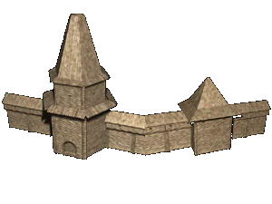

 |
Тактика осады и обороны укрепленных поселений |
|
| Укрепленные поселения
XII века захватывались не прямой атакой, но с
помощью внезапного нападения, изгона, либо
голодной осады -- облежания. В войне за крепости
феодалы обычно достига-ли временных, частных
целей. Укрывшись за стенами укреплений, они
выговаривали почетный мир, действовали
преимущественно дипломатическими приемами и
искали новых союзников. В XII веке уже были возведены первые каменные крепости. Естественно, что появились и новые приемы осадного искусства. В противоборстве с обеих сторон участвовали конные отряды, пехотинцы же участвовали преимуществено со стороны города. Осада заключалась в многократном приближении отрядов противоборствующих сторон к стенам городов и схватках дружинных отрядов. Нападение длилось от одного-трех дней до многих недель, при этом в течение всего это времени шли активные бои. Чаще всего во время боя не использовали специальную осадную технику, бой был расчитан на вывод из строя или изматывание живой силы одного из противников. Наиболее важным при таком сражении было заставить противника или отступить, или сдаться, или договориться о мире. Такие сражения носили ожесточенный характер и сопровождались массовыми увечьями и жертвами. К середине XII века активность крепостной войны усилилась, а во второй половине XII века уже предпринимаются первые попытки открытого штурма укреплений. Это означало атаку и разрушение укреплений, отнятие ворот, прорыв внешней оборонительной линии, пролом стен и засыпку рвов. В связи с появлением самострелов и общим усилением дальнобойных средств многократные приступы городов начинают усложняться. Городища часто строились с двухрядными или с четырехрядными системами валов и рвов. При таком устройстве укреплений защитники города могли выдвинуться вперед на заграждения на дистанцию прицельной стрельбы из луков, самострелов и камнемето, что примерно в два раза расширило зону боя вокруг городов. Соответственно этому исходная стрелковая позиция атакующих осаждающих оказалась отодвинутой от главной стены, и они вынуждены были начинать нападение с преодоления переднего заграждения, за которым располагалось еще не менее двух таких же. Такое расширение оборонительной системы свидетельствовало об усилении приступов и о внедрении дальнобойных метательных средств, в том числе и камнеметов. При трехрядных заграждениях первый вал носил название «тына», перед ним выкапывался ров шириной 7-8 метров. Площадка тына достигала в ширину обысно 20-32 метров и позволяла использовать ее для конного передвижения лучников. Вторая линия обороны, «оплот», отделялась от первой рвом шириной от 2 до 9 метров. Между оплотом и главной стеной находился еще один ров шириной до 14-15 метров, за которым возводилась главная стена с воротами, по высоте в 2-3 раза превышавшая предыдущие заграждения. Прорыв таких укреплений требовал использования осадной техники и создания специальных ударных бригад. Другой системой укреплений была многоярусная высотная оборона, к которой относились высокие боевые башни. Башни сильно повышали стрелковую защиту и позволяли использовать фланговый и косоприцельный обстрел. Они были воротными, угловыми, средистенными и внутригородскими. Стоительство таких многобашенных сооружений привело к тому, что оборона городов стала, как правило, сильнее атаки. |
|
Текст и
иллюстрации (c) 1997 Snowball Interactive Entertainment, Inc. |